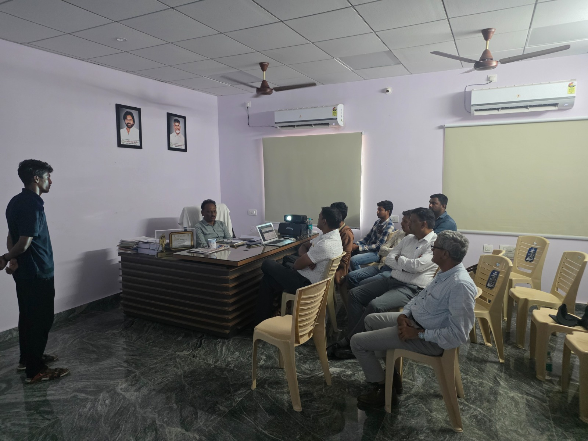

— THE CHALLENGE
Waste Management in Kuppam
Waste Management in Kuppam
Before WASTRAQ
A municipality of 65,000 residents generating 35–40 metric tonnes of waste daily — with no digital visibility into any of it.
Untracked Waste
All collection data lived in paper registers. No digital record, no aggregation, no state-level reporting — errors were routine and audits were impossible.

Poor Monitoring
No GPS. Vehicles disappeared after departure. Supervisors had zero visibility into routes, missed stops, or vehicle location throughout the day.

Low Efficiency
Budgets were built on guesswork. SBM compliance reports took 3–5 days to compile manually. Data-driven decisions simply weren't possible.
